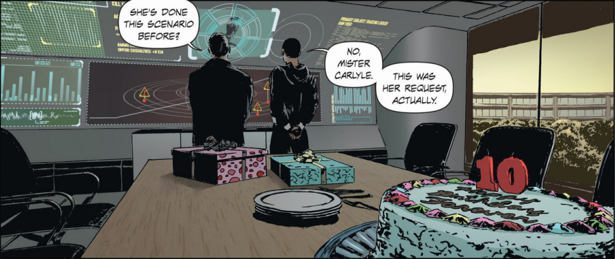
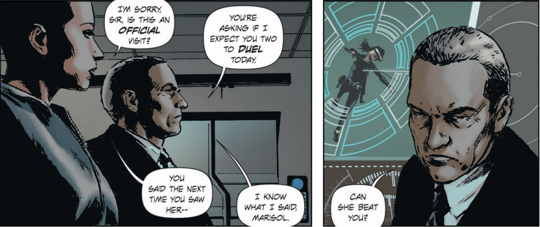
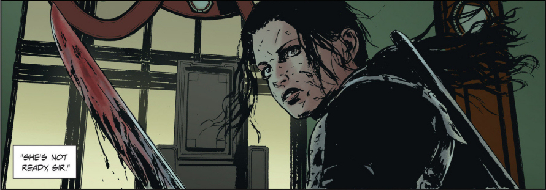
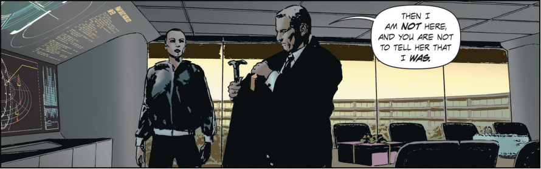
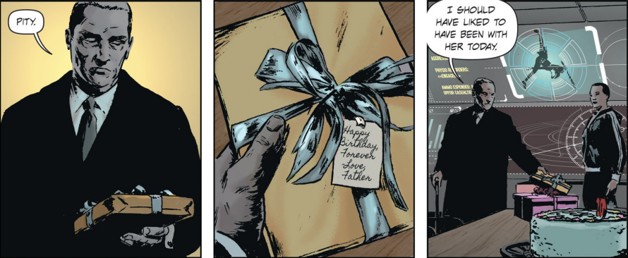

In the wake of the Global Financial Crisis, and following the substantial agricultural and financial investments to their respective economies from the Carlyle Future Foundation (CFF), Greek and Portuguese governments enact legislation, which effectively privatise their economies under Carlyle management. Despite serious concerns from the United Nations and objections from many world governments, the economies of Greece and Portugal start showing signs of stabilisation.
Seeing the positive results, many other nations throughout Africa and Central America follow the suit and seek economic assistance from CFF.
After China's economy falls into a deep recession, CFF's rivals, including the Bittner Economic Advisory Foundation and Inamura Global Associates imitate this model and send their representatives to China to offer loans and other economic relief.
The downturn of the Chinese economy causes panic in global financial markets. In response, the World Bank, International Monetary Fund and other major financial institutions grant unprecedented control to several influential private firms, including Carlyle, Inamura, Bittner, Morray, Hock and O’Souza holdings.
Following global market declines, inflation and consequent devaluation of all major world currencies, mass protests and unrests occur across much of the developed world. After the authorities fail to find a solution to these pressing problems, the entire old social system simply collapses. Widespread rioting, at some places lasting several weeks, takes place in all major cities across the globe. The damage to property and infrastructure is irreparable and the final death toll is estimated at 3.9 million.
In the aftermath of these events, the heads of the sixteen most financially powerful Families from around the world gather in Macao to establish rules which will solidify their holdings. These negotiations culminate in 'Macao Accord' - effectively ending the government control and dividing the world into 16 spheres of influence, ruled by the individual Families. The old world order is dead and a new order is born.
This world of the future lies divided not across geo-political boundaries but across the financial ones. The wealth is power and that nigh-on unlimited power now rests with only a handful of Families. Each Family exerts unlimited control over their respective realm, its resources and its inhabitants. The few lucky ones, who are found to be of use and provide valuable services to their ruling Family are called Serf - these people are protected, cared for and enjoy a life of relative abundance. All others are referred to as Waste.
Because the driving force of this new world order is an insatiable greed, the Families forge brittle alliances and wage bitter wars with their neighbours to protect their interests or extend their territories.
One of the most powerful families are Carlyle. "Oderint Dum Metuant" - Let Them Hate (So Long As They Fear) - a motto under their crest, also a favourite saying of Caligula - arguably the most infamous and ruthless Roman emperor, gives some insight into the way Carlyle family exerts their power over their subjects.
Each family has a special, genetically engineered member, bestowed with special abilities and near invincibility, called Lazarus (a reference to biblical Lazarus, who was raised from the dead). Every Lazarus is trained from the early childhood in martial arts, handling firearms, covert operations and sabotage as well as in the arts of self-control and pain tolerance.
Forever Carlyle is the Lazarus of the Carlyle Family, her modified genes assuring that she will always remain unquestionably loyal to her family. Forever (or Eve for short) acts as both a shield and a sword of Carlyle Family, deployed in any situation when the family name, property or interest comes under threat.
She admires and loves her father, Malcolm Carlyle - the patriarch of the Carlyle Family, and would not hesitate to follow any of his orders, however ethically questionable they might be, or risk her life to protect him and the Family. Malcolm Carlyle appreciates and respects Forever as a family defender, he however does not love her in the same way as his true biological offspring and Forever’s ‘siblings’.
Lazarus could well become one of the best (if not ‘the best’) sci-fi comics of this decade.
Forever is not aware of this and, emotionally controlled by her father, fights his wars, sabotages enemy installations, kills members of resistance, executes traitors and assassinates opponents - all in his name, never once questioning her loyalty to him and her Family. Until one day a message appears on her computer screen: "He is not your father. This is not your family."
The comic book, written by a veteran American comic book writer and novelist Greg Rucka (Gotham Central, Wolverine, Wonder Woman) with art by Michael Lark (Daredevil, The Amazing Spider-Man, Captain America) has all what makes a good graphic novel: imaginative setting, thrilling plotline, credible and well-researched back-story, life-like protagonists and internal conflict of the main character. Illustrations are of very high quality and the overall execution of the comic books is also very professional, complete with the background stories, vintage advertisements and crests of individual families.

Where the creators will take the story arc and whether this promising comic book series can live up to its full promise remains to be seen but Lazarus has the potential to become one of the best (if not ‘the best’) science fiction comics of this decade.